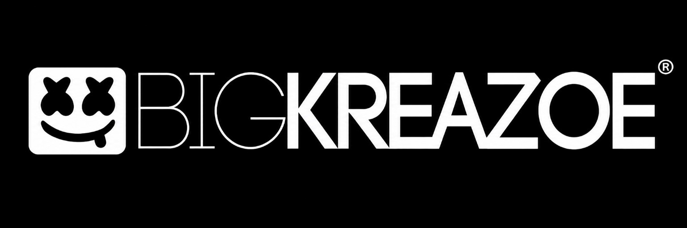

Production & composition
Music production, composition, arrangement and vocal production.
Independent spirit. Industry experience.
Available for opportunities
Bheki Christopher Thobela / KREAZOE™
Music Producer · Recording Engineer · A&R & Artist Development · Music Business Professional.
Bridging creative instinct, studio execution and music-business strategy.
01 / About
From the first idea to the final session, the music comes first.
Five years inside Ambitiouz Entertainment working across production, recording, artist development and A&R-style decision-making, supported by independent work before and after the label.
A producer's ear, an engineer's workflow and a music-business perspective — useful in A&R, artist development, label operations, studio roles, music management and rights/repertoire environments.
Professional profile on LinkedInMusic production, composition, arrangement and vocal production.
Session setup, tracking, editing, mixing and organised stem preparation.
Artist development, A&R-style song evaluation, creative direction and music-business discussions.
02 / Publicly supported credits
These selections link to public music databases or platforms that name Bheki Christopher Thobela in production/composition metadata. This section intentionally distinguishes independently verified credits from additional studio credits.
Qobuz lists Bheki Christopher Thobela as Producer / StudioProducer on these four tracks.
Shazam credits Bheki Christopher Thobela as Producer alongside Mfanafuthi Ruff Nkosi.
Audiomack lists Bheki Christopher Thobela as Producer.
Audiomack credits Bheki Christopher Thobela and Pheto Mbulelo Mabena as Producers.
Qobuz lists Bheki Christopher Thobela as Producer / StudioProducer / NonLyricAuthor.
Shazam lists Bheki Christopher Thobela as Producer.
Shazam lists Bheki Christopher Thobela as Producer.
Source descriptions are preserved from the existing portfolio. Third-party metadata may change over time.
03 / Selected studio discography
Additional first-hand studio credits supplied by Bheki Christopher Thobela. These are listed separately from the public-verification section above because online metadata can be incomplete, inconsistent or omit recording-engineer contributions.
DIY 2: Lessons · Abantu · Bring It Back · I Need Love
Additional: Prayer · Smogolo
The Second Coming: Winning · Andisababoni · Icebo · My People · Amen · Lollipop · Sucker Free · Life
Additional: Right Back · Movie · Get Money feat. Styles P & Stogie T
Sindisiwe: Umona · Questions · Every Morning · Is It True · Phinde
Additional: Messed Up feat. Lisa
Sjava · S'Villa · Saudi · DJ Mkiri Way feat. Blaq Diamond · CiCi and other Ambitiouz Entertainment sessions.
Recording involvement on most songs on the project. Production is not claimed.
Music production, composition, artist development, vocal production, mixing, stem delivery and selected visual/album-artwork work.
The Emtee “DIY 2” title track is intentionally omitted from the selected credits due to conflicting online metadata.
04 / Professional experience
Experience and independent studio work are presented as first-hand professional history, separately from the public-source credits above.
05 / Workflow & capabilities
Production and studio capabilities spanning music creation, recording, artist development and delivery.
Build the music through production, composition and arrangement.
Shape songs, vocal delivery, performances and creative direction with artists.
Session setup, tracking and editing, supported by studio equipment and signal-flow knowledge.
Mix records and prepare organised stems for final mastering.
In the studio
DAW adaptability · Studio equipment · Signal flow · Recording · Vocal production · Mixing · Stem preparation
06 / Education & background
Music Business and Entertainment Management — Distinction. Qualification quality-assured by SAMRO.
Introduction to Personal Computers — completed 17 October 2023.
National Senior Certificate (Matric).
English · isiZulu · siSwati
Available for opportunities
Let’s connect / 07Open to full-time, hybrid, remote and contract opportunities across A&R, artist development, label relations, production, recording, studio operations, rights & royalties and music-business roles.
Midrand · Johannesburg · South Africa
English · isiZulu · siSwati